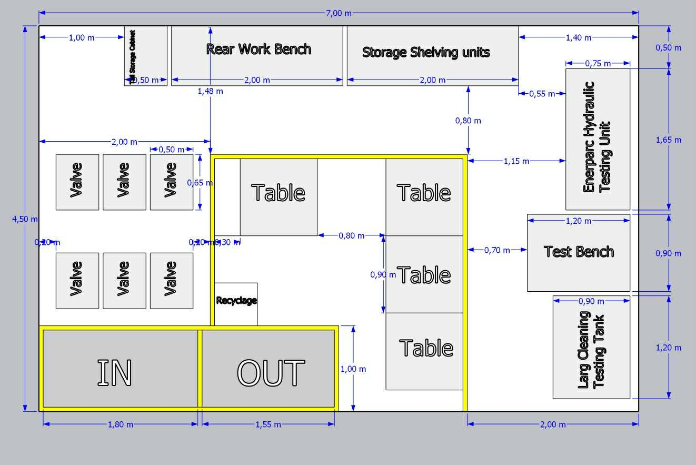
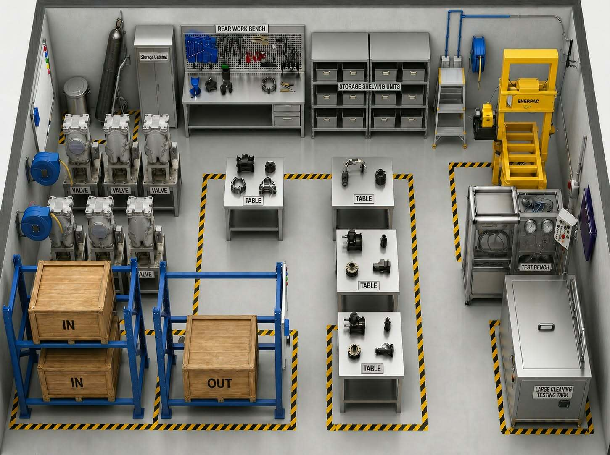

1. Introduction
Ce projet consiste en la conception et l’aménagement d’un atelier industriel dédié à la maintenance, au test et au nettoyage des vannes industrielles (SRV & GCV). L’objectif principal est d’optimiser le flux de travail, améliorer la sécurité et augmenter la productivité.
2. Objectifs du Projet
3. Plan Technique

4. Visualisation 3D

5. Zones Fonctionnelles
6. Processus de Maintenance
7. Equipements
8. Sécurité (HSE)
9. Analyse Technique
L’aménagement permet un flux linéaire sans croisement, réduisant les pertes de temps. La centralisation des tables améliore la collaboration et la productivité. Les équipements lourds sont placés en périphérie pour maximiser l’espace.
10. Résultats
11. Conclusion
Cet atelier représente une solution optimisée répondant aux exigences industrielles modernes. Il garantit performance, sécurité et organisation efficace.